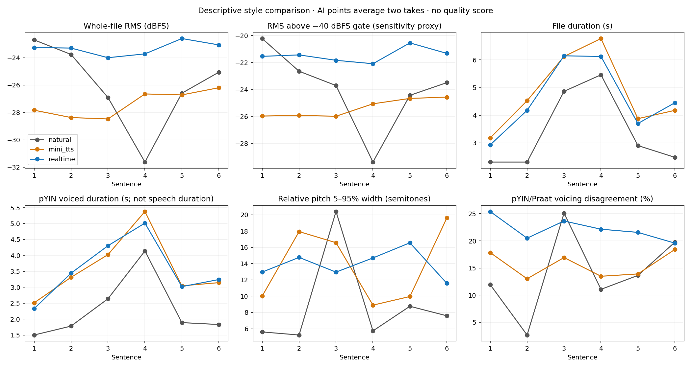
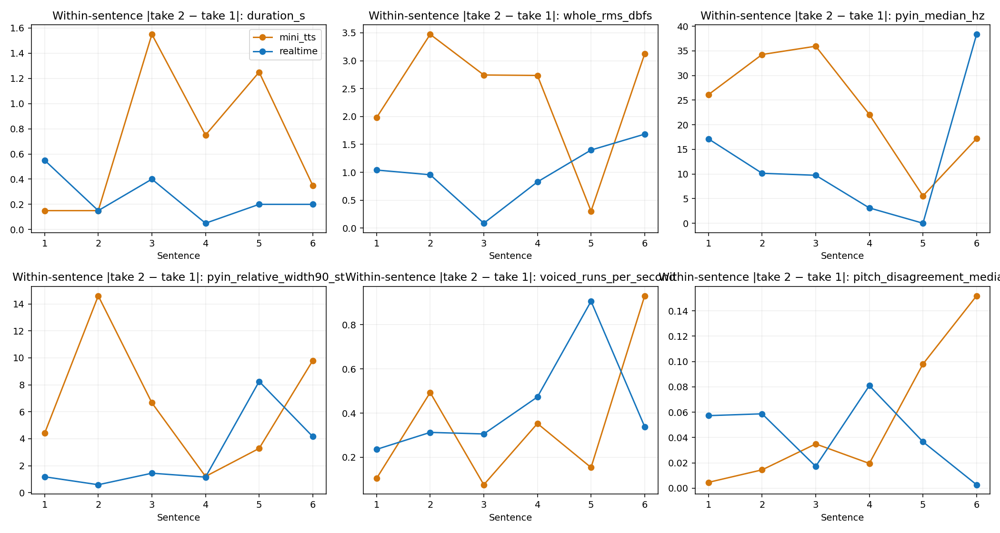

Exploratory model comparison — accepted reviews only
Mini-TTS: accepted v2, coral. Realtime 2.1: paired_new_models_001, marin. Natural: six distinct references, not perfect pronunciation standards. One unblinded listener; six sentences, two AI repeats; model, voice and API mode change together. No final scores, training or new recordings.
HUMAN RATINGS (counts of takes; each AI condition has 12)
lexical_tone_realization: mini-TTS {'clearly problematic': 12}; Realtime {'clearly problematic': 9, 'somewhat unnatural': 3}
segmental_pronunciation: mini-TTS {'clearly problematic': 12}; Realtime {'clearly problematic': 9, 'somewhat unnatural': 3}
perceived_nasality: mini-TTS {'normal': 3, 'somewhat excessive/unusual': 3, 'clearly excessive/unusual': 6}; Realtime {'cannot determine': 2, 'somewhat excessive/unusual': 8, 'normal': 1, 'clearly excessive/unusual': 1}
prosody_intonation: mini-TTS {'clearly problematic': 12}; Realtime {'clearly problematic': 10, 'somewhat unnatural': 2}
rhythm_fluency: mini-TTS {'clearly problematic': 12}; Realtime {'clearly problematic': 11, 'somewhat unnatural': 1}
overall_yoruba_naturalness: mini-TTS {'very unnatural': 12}; Realtime {'very unnatural': 11, 'noticeably unnatural': 1}
reviewer_confidence: mini-TTS {'high': 12}; Realtime {'high': 12}
Natural-reference ratings for those seven dimensions were not collected. Do not impute natural/acceptable labels from transcript QC. All six are transcript matches in natural QC v2.
ISSUE TAGS (optional selections, not exhaustive diagnoses)
e/ẹ: mini-TTS 2/12; Realtime 1/12
o/ọ: mini-TTS 0/12; Realtime 2/12
s/ṣ: mini-TTS 0/12; Realtime 0/12
lexical tone: mini-TTS 12/12; Realtime 12/12
nasal quality: mini-TTS 11/12; Realtime 5/12
consonant realization: mini-TTS 12/12; Realtime 11/12
vowel realization: mini-TTS 12/12; Realtime 11/12
unusual duration/stretching: mini-TTS 9/12; Realtime 5/12
rhythm: mini-TTS 12/12; Realtime 11/12
intonation/prosody: mini-TTS 12/12; Realtime 12/12
other: mini-TTS 0/12; Realtime 0/12
VERBATIM NOTES
mini_tts: [{"generation_id": "p01_coral_r01", "note": "It sounds very unnatural. Na sounds like english not the yoruba, i think it pronoucnes words as they appear in english"}]
realtime: No free-text notes supplied.
Natural p01 in mini_tts review: The natural reference is good
Natural p01 in realtime review: Good
No problematic time intervals were supplied for the AI takes.
User message observation: Realtime sounded CALMER and LESS LOUD, without meaningful improvement in language-specific quality. Stored separately as a human perception, not an acoustic diagnosis.
ACOUSTICS
Total file duration: natural 20.309 s (6 recordings); mini-TTS 57.300 s and Realtime 55.050 s (12 each). Natural totals are not exposure-matched to twice as many AI files. AI total difference is -2.250 s (-3.9%).
The following table gives medians across recordings, not pooled frames. The separate paired-difference table averages the two takes per sentence before subtracting model conditions; its medians need not equal differences of clip medians.
metric | natural | mini-TTS | Realtime
duration_s | 2.688 | 4.475 | 4.300
whole_rms_dbfs | -25.829 | -26.988 | -23.544
active_above_40_rms_dbfs | -23.596 | -25.135 | -21.548
active_above_40_s | 1.770 | 2.750 | 2.900
pyin_voiced_duration_proxy_s | 1.860 | 3.365 | 3.298
pyin_median_hz | 191.692 | 193.107 | 181.476
praat_median_hz | 190.227 | 193.312 | 184.615
pyin_min_hz | 127.338 | 87.793 | 90.382
pyin_max_hz | 228.988 | 281.097 | 273.878
praat_min_hz | 124.870 | 121.982 | 127.663
praat_max_hz | 234.916 | 278.254 | 285.185
pyin_relative_width90_st | 6.663 | 11.900 | 13.668
pyin_voiced_percent | 69.369 | 78.133 | 78.854
praat_native_voiced_percent | 58.609 | 63.304 | 59.008
voiced_runs_per_second | 1.782 | 2.050 | 2.243
voiced_run_median_s | 0.205 | 0.355 | 0.290
unvoiced_run_max_s | 0.588 | 0.320 | 0.335
median_adjacent_voiced_step_st | 0.100 | 0.100 | 0.100
pitch_disagreement_median_st | 0.151 | 0.183 | 0.174
voicing_disagreement_percent | 12.792 | 14.255 | 22.605
agreement_screen_percent | 12.823 | 27.319 | 29.832
crest_factor_db | 15.788 | 15.265 | 15.171
active_block_rms_width90_db | 16.642 | 15.645 | 16.915
Median minima/maxima above summarize per-file raw ranges; exact min/max and 5th/95th percentiles for every clip are in cross_model_acoustics.csv. Raw extremes can include estimator failures. Pitch is preserved in Hz and in own-utterance-relative semitones, separately per estimator.
Verified speaking duration is unavailable: voiced duration excludes unvoiced consonants, and RMS gates may include background noise or miss quiet speech. File duration includes silence. Threshold sensitivity at -50/-40/-30 dBFS is retained; these are energy proxies, not a validated speech detector.
dBFS is digital amplitude relative to full scale, not calibrated sound pressure, vocal effort, or perceptual loudness. Recordings were not normalized or trimmed. Natural recording channels and speakers differ.
CALMER / LESS LOUD: EVIDENCE CHECK
Realtime had HIGHER whole-file RMS in all six sentence averages. Median paired increase: +4.30 dB. At -50/-40/-30 dBFS activity gates, all six sentence averages also had higher gated RMS; median increases were +4.34/+4.13/+3.32 dB. Thus lower digital signal level is not supported. No playback-volume measurement or frequency-weighted loudness calibration was available. Spectral balance, voice quality or playback conditions could affect perception; these explanations are untested.
Lower pitch is a plausible correlate of perceived calmer style: Realtime median F0 was lower in 5/6 sentence averages with pYIN, 4/6 with Praat. Median paired deltas: -15.73 Hz and -12.00 Hz. This is confounded by marin versus coral and is not a pronunciation improvement.
No consistent slower timing or narrower expressive range: file duration was lower for 4/6 sentence averages; energy-active duration and voiced-duration proxies each lower in only 3/6. Relative pitch-width changes were mixed (3/6 lower). Active-block RMS dynamic width was lower in only 1/6. Crest factor changed little and inconsistently. We cannot quantify calmness from these observations.
REPEAT CONSISTENCY
mini_tts same-rating sentence pairs: {'lexical_tone_realization': 6, 'segmental_pronunciation': 6, 'perceived_nasality': 3, 'prosody_intonation': 6, 'rhythm_fluency': 6, 'overall_yoruba_naturalness': 6, 'reviewer_confidence': 6}
mini_tts median absolute take-to-take duration_s: 0.55
mini_tts median absolute take-to-take whole_rms_dbfs: 2.74
mini_tts median absolute take-to-take pyin_median_hz: 24.096
mini_tts median absolute take-to-take pyin_relative_width90_st: 5.535
realtime same-rating sentence pairs: {'lexical_tone_realization': 5, 'segmental_pronunciation': 5, 'perceived_nasality': 4, 'prosody_intonation': 4, 'rhythm_fluency': 5, 'overall_yoruba_naturalness': 5, 'reviewer_confidence': 6}
realtime median absolute take-to-take duration_s: 0.2
realtime median absolute take-to-take whole_rms_dbfs: 0.999
realtime median absolute take-to-take pyin_median_hz: 9.937
realtime median absolute take-to-take pyin_relative_width90_st: 1.308
Realtime repeats were more consistent on these four selected descriptors in this sample; this does not imply better language quality. Two repeats cannot characterize a generation distribution.
RELIABILITY
Median per-clip pYIN/Praat voicing disagreement: 14.25% mini-TTS versus 22.60% Realtime; all six sentence-average disagreements increased. Jointly voiced-frame median pitch disagreement remained small (0.183 vs 0.174 semitones), but this omits frames where the estimators disagree about voicing.
mini_tts frame flags (overlap allowed): {'pyin_probability_below_0.5': 2474, 'edge_window': 108, 'pitch_difference_over_1_semitone': 317, 'voicing_disagreement': 882, 'near_pyin_floor': 143}
realtime frame flags (overlap allowed): {'pyin_probability_below_0.5': 2420, 'edge_window': 108, 'pitch_difference_over_1_semitone': 239, 'voicing_disagreement': 1206, 'possible_octave_disagreement': 3, 'near_pyin_floor': 28}
Do not treat the agreement screen as an accuracy guarantee. Both estimators can fail together; many frames fail probability/strength screens. Raw measurements and original flags remain linked in provenance.
DECISIONS
1. No broad material Yoruba-quality improvement is established by this pilot. Realtime has small category shifts: tone 3/12 somewhat unnatural, segmental 3/12, prosody 2/12, rhythm 1/12; overall 1/12 noticeably unnatural and 11/12 very unnatural. No natural/acceptable AI ratings. The clearest limited contrast is p03 repeat 2; preserve it without claiming a validated effect.
2. Acoustic style changed: higher digital RMS, generally lower median pitch, modestly shorter files and more consistent selected repeat descriptors. Differences are model-plus-voice-plus-endpoint effects.
3. Lower median F0 is most consistent with calmer; repeat consistency is supporting descriptive context rather than proof of calmness within a take. Lower RMS, uniformly slower delivery and uniformly narrower pitch dynamics are not supported.
4. Tone, consonant/vowel realization, intonation and rhythm problems persisted across both conditions. Nasality severity labels shifted, but two Realtime takes were cannot determine, and ratings do not establish acoustic nasality.
5. Variation now supports exploratory candidate-feature hypotheses and selecting contrasts, not training or validating predictors. Tone/segmental each have only three milder examples, prosody two, rhythm/naturalness one; these cluster by sentence and condition. Natural clips lack comparable dimension ratings, so cannot be silently used as positive labels.
6. Lexical tone needs verified tone-bearing-unit boundaries and context-sensitive relative contours. Segmental pronunciation needs verified phoneme/segment labels, vowel/formant/spectral and duration features. Nasality needs exploratory harmonic/formant measures, F1 bandwidth and spectral trajectories with controls. Prosody and rhythm need phrase boundaries, syllable timing and verified pauses; naturalness needs broader independent listener labels and perceptual controls.
7. Smallest useful next experiment: use existing p03 natural audio plus both mini-TTS and both Realtime takes. Collect supervised phrase/syllable boundaries and localized native-listener issue labels, targeting the milder Realtime repeat 2. If investigating loudness perception separately, plan a counterbalanced original-versus-level-matched listening control using derived copies only after approval; keep raw originals intact. No experiment was executed here.